Lecture video
Anatomy and Body Regions: full lecture
Focus: Human Anatomy
Foundations: The Language of Anatomy & Body Organization
The anatomy portion of the course. In a combined class, this pairs with the physiology unit. How we use anatomy to name regions and directions, find cavities and membranes, and reason through clinical problems. Dr. Sharilyn Rennie
Download the PowerPoint · need a PDF? Download the accessible PDF from Canvas.
Part 1
Definitions and Framing
Anatomy gives us the words; physiology is what those structures do. Change the structure and you change the function. That is the whole course in one sentence.
Part 1 · Framing
How an anatomist thinks
- Anatomy is the study of structure: what a part is, where it sits, and what it connects to.
- Physiology is the study of function: what that structure does and how it works.
- Core idea: structure determines function. When anatomy changes, physiology changes with it.
- We will keep returning to this link: name the structure, then predict what its change would do to the body.
Part 1 · Clinical words
From structure to the clinic
- Disease: a defined process with a known mechanism (for example, pneumonia).
- Disorder: a disruption of normal function, mechanism not always single or known.
- Sign: objective, measurable by someone else (fever, swelling, a lab value).
- Symptom: subjective, reported by the patient (pain, nausea, fatigue).
- Physical exam findings: what the clinician observes by looking, feeling, listening.
- Labs and imaging: structure and function measured directly (blood values, X-ray, CT).
Part 1 · Organization
Levels of structural organization
Levels of organization. Each level is built from the one before it.
Part 2
Body Regions, Position, and Direction
One agreed starting position, one set of planes, and paired directional terms let any two people describe the same spot the same way.
Part 2 · Reference
Anatomical position
- Anatomical position: body erect, feet flat and slightly apart, head and eyes forward, arms at the sides, palms forward.
- Every directional term assumes this position, so a description never changes with how the person is actually lying or standing.
- Supine: lying face up. Prone: lying face down.
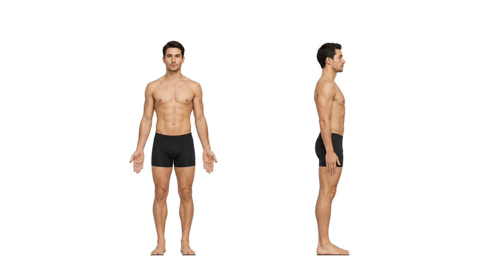
Anatomical position. The fixed reference for every term.
Part 2 · Planes
Body planes and sections
- Sagittal (vertical): right and left parts. Midsagittal on the midline gives equal halves; parasagittal gives unequal parts.
- Frontal (coronal) (vertical): anterior and posterior parts.
- Transverse (horizontal): superior and inferior parts, a cross section.
- Oblique: any angle other than 90 degrees.
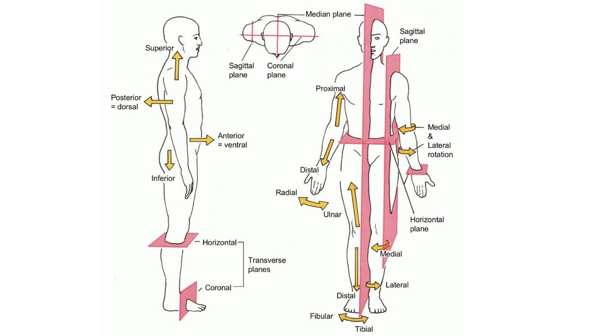
The planes. How we cut the body. Click to enlarge.
Part 2 · Direction
Directional terms come in pairs
- Superior / Inferior: above versus below, toward the head or the feet.
- Anterior (ventral) / Posterior (dorsal): toward the front versus the back.
- Medial / Lateral: toward the midline versus away from it.
- Proximal / Distal: nearer versus farther from the trunk, used for limbs.
- Superficial / Deep: toward versus away from the body surface.
- Ipsilateral / Contralateral: same side versus opposite side.
Planes and directions. Click to enlarge.
Part 2 · Regions
Regional terms: anterior and posterior
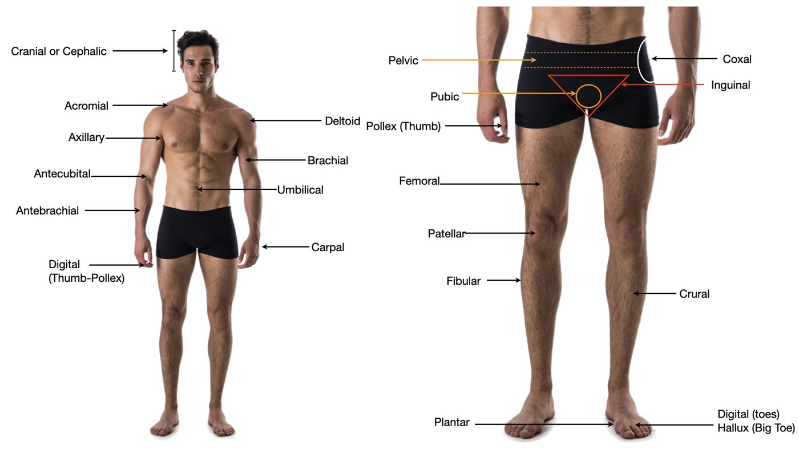
Anterior regions. Head, neck, trunk, and limbs from the front.
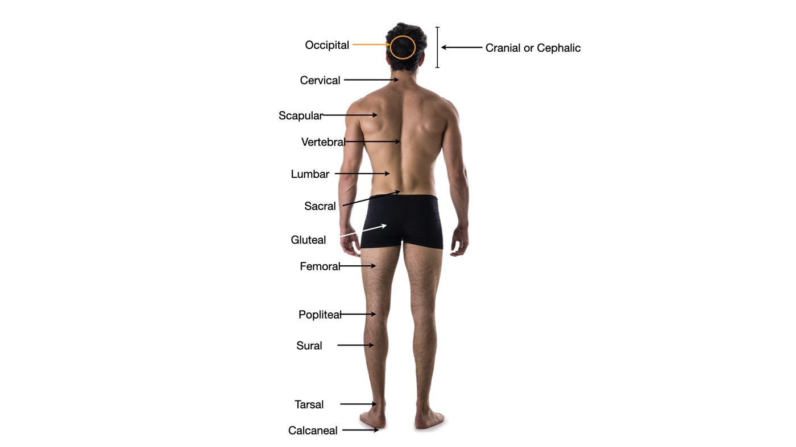
Posterior regions. The same map from the back.
Part 2 · Regions
Sorting regions: axial vs appendicular
- Axial regions name the head, neck, and trunk: cephalic, cervical, thoracic, sternal, abdominal, umbilical, vertebral, lumbar, sacral, gluteal.
- Appendicular regions name the limbs: acromial, brachial, antecubital, antebrachial, carpal, digital, coxal, femoral, patellar, crural, sural, tarsal.
- Sort every regional term into one of these two buckets as you learn it. (Use your atlas for the lateral view.)
Part 3
Body Cavities and Abdominopelvic Quadrants
The organs live inside enclosed spaces. Name the space and you have narrowed down what can go wrong there.
Part 3 · Cavities
The body cavities
- Dorsal body cavity: the cranial cavity (brain) and the vertebral cavity (spinal cord).
- Ventral body cavity: the thoracic cavity (heart and lungs) and the abdominopelvic cavity, separated by the diaphragm.
- Inside the thorax: two pleural cavities (one per lung) and the mediastinum in the middle. The pericardial cavity (heart) sits within the mediastinum.
- The abdominopelvic cavity has two parts: the abdominal cavity (digestive viscera) above and the pelvic cavity (bladder, reproductive organs, rectum) below.
The body cavities. Dorsal protects the nervous system; ventral holds the viscera.
Part 3 · Quadrants
Abdominopelvic quadrants
- Two lines through the umbilicus divide the abdomen into four quadrants: RUQ, LUQ, RLQ, LLQ. Where it hurts points to the organs there.
- RUQ: liver, gallbladder, right kidney, head of pancreas.
- LUQ: stomach, spleen, left kidney, tail of pancreas.
- RLQ: appendix, cecum, right ovary and ureter.
- LLQ: sigmoid and descending colon, left ovary and ureter.
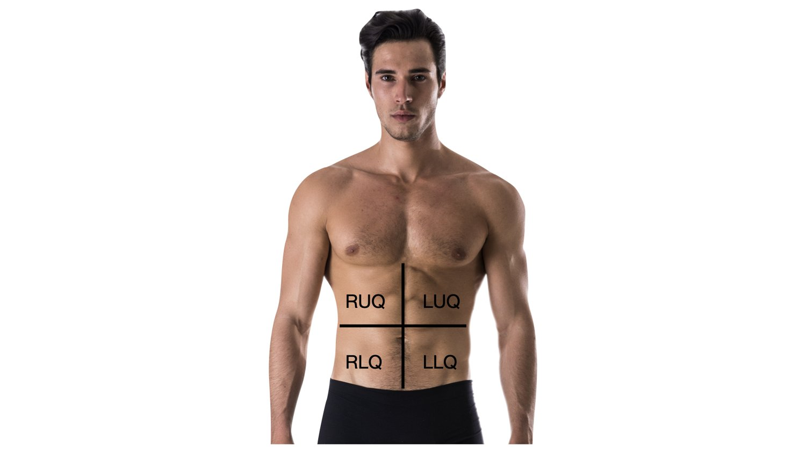
Four quadrants. A map for locating pain.
Part 3 · Regions
Abdominopelvic regions (nine)
- A tic-tac-toe grid gives nine regions, more precise than the four quadrants.
- Top row: right hypochondriac, epigastric, left hypochondriac.
- Middle row: right lumbar, umbilical, left lumbar.
- Bottom row: right iliac (inguinal), hypogastric (pubic), left iliac (inguinal).
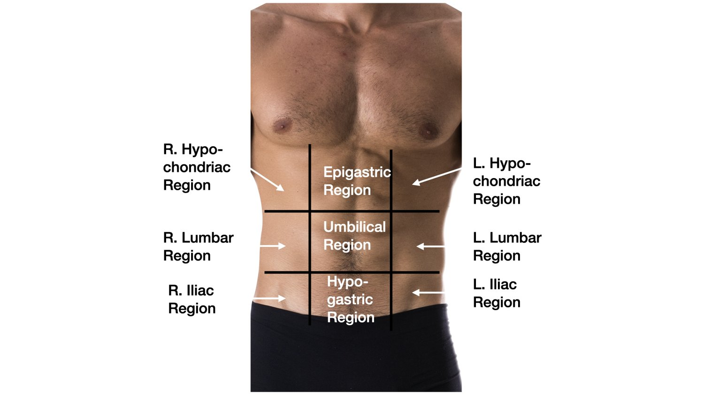
Nine regions. For tighter localization.
Part 4
The Mediastinum
The central compartment of the thorax, between the two lungs. Everything that travels between head and abdomen passes through here.
Part 4 · Mediastinum
Borders and contents of the mediastinum
- The central compartment of the thorax, between the two pleural cavities.
- Superior: the thoracic inlet, at the level of the first rib.
- Inferior: the diaphragm.
- Anterior: the sternum. Posterior: the vertebral column.
- Lateral: the mediastinal pleura, with a lung on each side.
- Contents: heart (in its pericardium), great vessels, trachea, esophagus, thymus, phrenic and vagus nerves, thoracic duct, and lymph nodes.
- Not the lungs. A widened mediastinum on X-ray is a red flag, for example aortic injury.
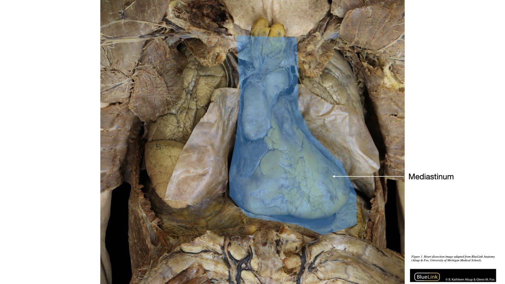
The mediastinum, the central compartment between the lungs. Adapted from BlueLink Anatomy, University of Michigan.
Part 5
The Retroperitoneum
Some organs sit behind the lining of the abdominal cavity rather than inside it. Knowing which changes how surgeons reach them.
Part 5 · Retroperitoneum
Behind the peritoneum
- The retroperitoneum is the space behind the parietal peritoneum, against the posterior (dorsal) abdominal wall.
- Intraperitoneal organs hang inside the peritoneal cavity, wrapped in peritoneum (stomach, most small intestine, liver, spleen).
- Retroperitoneal organs sit behind the cavity, covered by peritoneum only on their anterior surface.
- Mnemonic SAD PUCKER: Suprarenal (adrenal) glands, Aorta and IVC, Duodenum (2nd to 3rd parts), Pancreas (except tail), Ureters, Colon (ascending and descending), Kidneys, Esophagus, Rectum.
- Why it matters: a retroperitoneal organ can be reached without entering the peritoneal cavity.
Intraperitoneal vs retroperitoneal. In the cavity versus behind it.
Part 6
Membranes: Mucous and Serous
Body membranes line cavities and cover organs. The serous membranes are the ones that wrap the heart, lungs, and abdominal organs.
Part 6 · Membranes
Two membrane types to separate
- Mucous membranes line cavities that open to the outside (respiratory, digestive, urinary, reproductive tracts). They secrete mucus.
- Serous membranes line closed cavities and cover the organs inside them. They secrete thin serous fluid that reduces friction.
- Every serous membrane has two layers: a parietal layer (lines the cavity wall) and a visceral layer (covers the organ).
- Between the two layers is a fluid-filled serous cavity.
One plan, three places. Pleura (lungs), pericardium (heart), peritoneum (abdominal organs).
Part 6 · Serous
Pleura: around the lungs
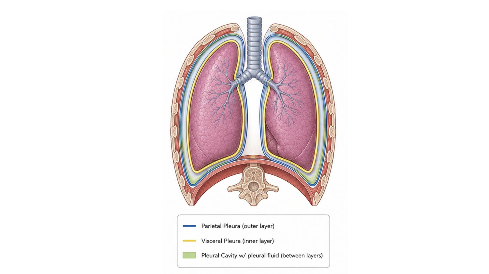
Pleura. Parietal and visceral layers with the pleural cavity between.
- Parietal pleura lines the thoracic wall; visceral pleura covers the lung surface.
- Between them is the pleural cavity with a thin film of pleural fluid.
- Inflammation here is pleuritis; air in the cavity is a pneumothorax.
Part 6 · Serous
Pericardium: around the heart
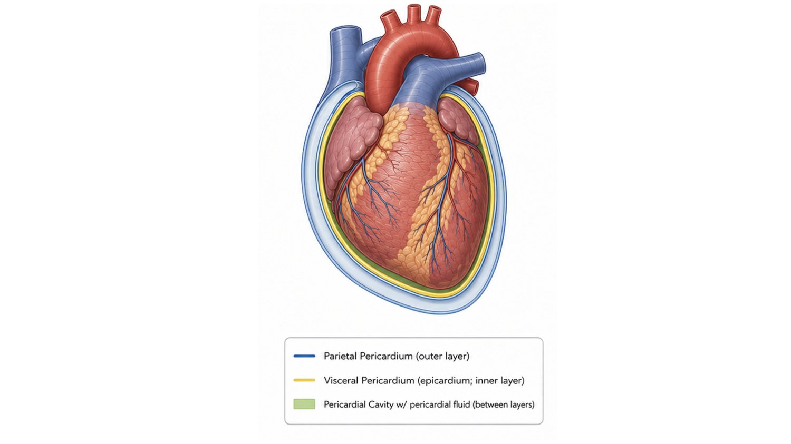
Pericardium. Parietal and visceral layers with the pericardial cavity between.
- Parietal pericardium lines the fibrous sac; visceral pericardium (epicardium) covers the heart.
- Between them is the pericardial cavity with pericardial fluid.
- Fluid building up here can compress the heart: cardiac tamponade.
Part 6 · Serous
Peritoneum: around the abdominal organs
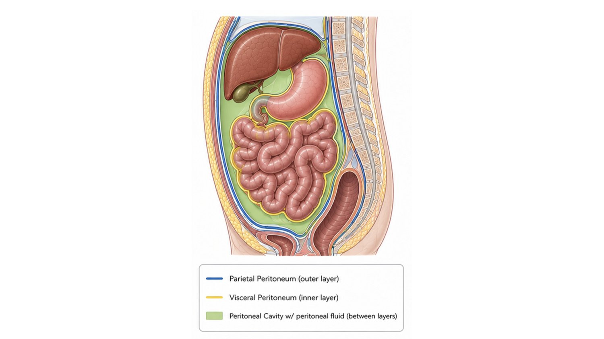
Peritoneum. Parietal and visceral layers with the peritoneal cavity between.
- Parietal peritoneum lines the abdominal wall; visceral peritoneum covers the organs.
- Between them is the peritoneal cavity with peritoneal fluid.
- Inflammation here is peritonitis; this is the cavity retroperitoneal organs sit behind.
Part 7
Problem Solving with the Terminology
Now use the words. Locate, predict, and interpret, the same skills a clinician uses every day.
Part 7 · Practice
Recall: name it (DOK 1)
DOK 1 asks you to recall a fact or term directly.
DOK 1 · Recall
The wrist is ______ to the elbow.
Answer
Distal. The wrist is farther from the trunk than the elbow.
Part 7 · Practice
Apply: use the concept (DOK 2)
DOK 2 asks you to apply a concept or classify, not just recall it.
DOK 2 · Skill / Concept
A patient has tenderness in the right lower quadrant. Which organ does that location most directly raise?
Answer
Appendix. It sits in the RLQ, so RLQ tenderness raises appendicitis. You applied the quadrant-to-organ map.
Part 7 · Practice
Reason: put it together (DOK 3)
DOK 3 asks you to reason across several ideas and justify an answer.
DOK 3 · Strategic reasoning
A radiology note reads: "free fluid in the pleural cavity, right side." Between which structures is the fluid, and what is this called?
Answer
Between the parietal and visceral pleura, in the pleural cavity around the right lung: a pleural effusion. You linked the cavity, its two serous layers, and the clinical term.
Part 7 · Practice
Label it from memory
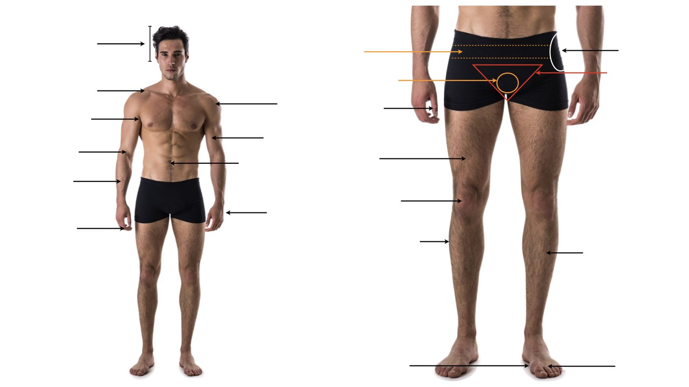
Your turn. Name each region, then check against the labeled slide.
- Cover the labeled slide. Name every arrow on this blank diagram out loud or on paper.
- Then sort each one as axial or appendicular.
- Draw the four planes through the figure and say what each divides.
Wrap up
Key takeaways
- Structure determines function: anatomy is the vocabulary, physiology is what it does.
- Anatomical position is the fixed reference; planes cut the body; directional terms come in opposite pairs.
- Sort regional terms as axial (head, neck, trunk) or appendicular (limbs).
- Cavities and quadrants localize organs; the mediastinum is central, the retroperitoneum is behind the peritoneum.
- Serous membranes (pleura, pericardium, peritoneum) each have a parietal and a visceral layer with fluid between.